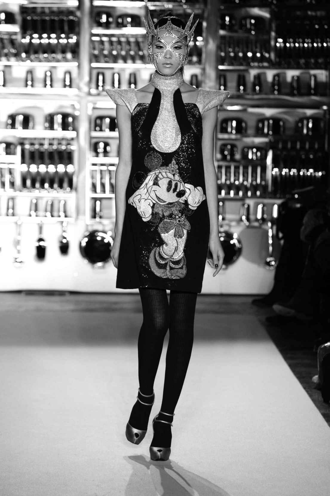
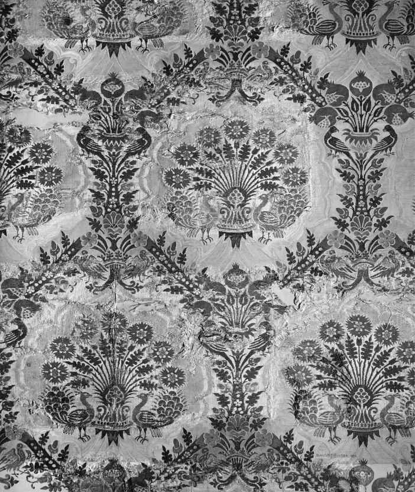
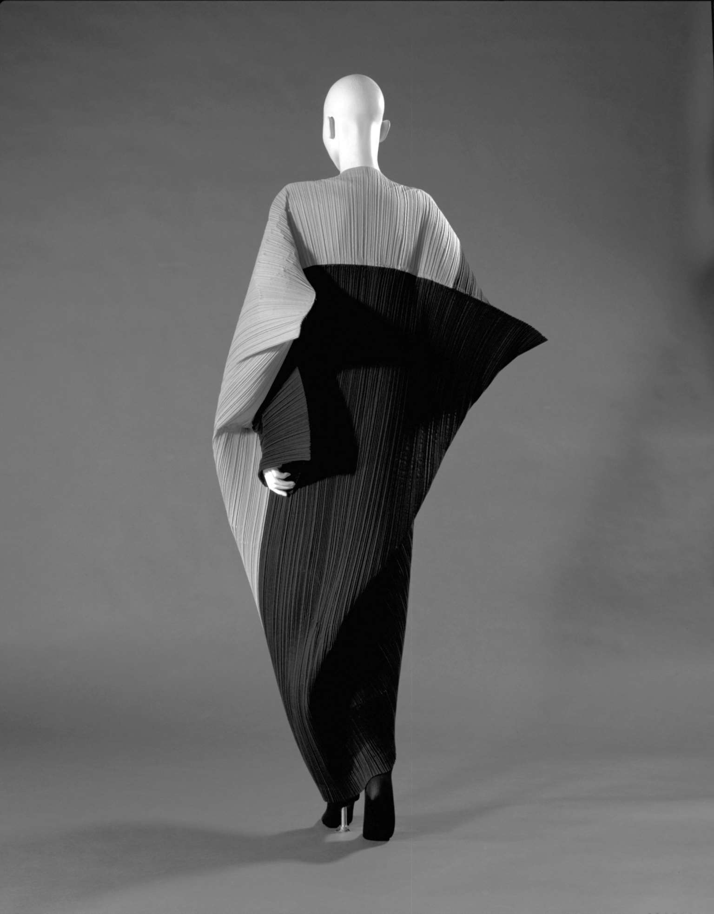

曼尼什· 阿若拉（Manish Arora）2008—2009秋冬系列以艺术家苏伯德· 古普塔整齐布置的不锈钢厨具装置艺术为秀场背景。这一金属布景为那些关于印度文化的陈词滥调作了一次讽刺的注解。古普塔闪闪发亮的陈设同时也预示了阿若拉时装秀中主导的冰冷的金银色调。他的模特被装扮成未来女战士的模样，并混合运用了许多历史元素，创造出金光闪闪的胸甲、硬挺的超短裙，还有接合的下装。罗马角斗士、中世纪骑士以及日本武士形象都得到呈现，并通过带刺的面具来强化充满力量的形象。这些来自各国的灵感元素，在阿若拉标志性的色彩明艳的三维刺绣、珠饰及贴花工艺之下，被发挥得淋漓尽致。这些工艺进一步体现了其融汇古今的手法，它们展示了传统的印度工艺，使用光彩夺目的施华洛世奇水晶来增强效果。

图18 曼尼什· 阿若拉在其2008—2009秋冬系列中融入了女战士形象与华特· 迪士尼动画角色的刺绣图案
阿若拉的合作者们也一样丰富多元。日本艺术家田明网敬一使用大眼娃娃和奇异野兽等迷幻形象，以作为裙装与外套的装饰图案。华特· 迪士尼的高飞狗、米奇和米妮也戴上了护甲和头盔，在一系列服装上全新亮相。整个系列突显了阿若拉的能力，他能够自看似不相关的元素与想法中打造出一套完整的造型，同时又强化了他作为国际时装设计师的地位，能够通过他精美的时装设计消除东西方鲜明的界定。自1997年创立自有品牌以来，阿若拉已经创作了许多充满想象力的作品，融合了传统刺绣与其他各种装饰工艺，运用波普艺术风格的色彩搭配和数不胜数的借鉴元素。他的装饰显示出奢华与繁复的特点，同时又细致入微地记录了他在时装产业中的个人成长。在伦敦时装周办秀时，英国国会大厦与皇室阅兵庆典的全景照被密集地印制在伞裙上；之后在巴黎，裙子上出现的则是埃菲尔铁塔。从一开始，他的目标就是要打造一个全球化的奢侈品牌，同时迎合印度以及各国消费者的品味。确实，他的时装风格使得这些区别越发不合时宜。大多数情况之下，这些消费者之间没有任何差异，如莉萨· 阿姆斯特朗所言，阿若拉“看起来并没有迎合国外市场——也没有试图弱化自己的繁复风格”。
21世纪早期见证了时装周在全球各地稳步增长的日程安排，时尚潮流通过互联网的即时传播，以及印度、中国等国财富与工业生产的增长。阿若拉的个人成功是印度作为时尚中心的自信不断发展的产物。印度的纺织品与手工技艺自古就声名远扬，但直到1980年代晚期才开始建设发展时装产业必备的基础设施。高级时装设计师开始出现，包括阿若拉曾就读的新德里国家时装技术学院在内的专业院校培养出一批新兴设计师。1998年，印度时装设计理事会成立，旨在推广印度设计师以及寻求资金支持。这使得成衣品牌有了发展的可能，也为在印度之外发展影响范围更广的时装产业打下了基础。阿若拉的商业能力使他获得了世界范围内的知名度，并为他带来利润丰厚的设计合作机会。例如，他为锐步（Reebok）制作了一个鞋履系列，为斯沃琪（Swatch）打造了一个限量腕表产品系列，还给魅可（MAC）设计了一个彩妆系列，展现了他标志性的明亮色彩和他对闪亮表面的热爱。像这样的商业合作为阿若拉提供了扩张自有品牌的平台。尽管如此，他的成功不应当只以他在西方世界内的认可度来判定。相反，作为不断壮大的能够熟练操作国际化销售并获得关注的非西方设计师群体中的一员，阿若拉身上体现了时装产业核心的地位正从西方逐渐偏离这一趋势。这一过程绝没有终结；值得注意的是，尽管阿若拉在伦敦和巴黎的时装秀提升了其在国际媒体与买手群体中的形象，他仍然会在印度办秀。而印度中上层阶级的崛起意味着他和他的同侪们拥有巨大的潜在国内市场，这种情况同样出现在其他致力发展时装产业的国家，其中就包括中国。
西方时尚都市也从吸引国际设计师加入本地项目带来的声望中受益。伦敦时装周一直争取国外媒体与首要店铺买手出席时装周大秀，努力维持着自己的业界形象。2005年2月，记者卡罗琳· 阿索姆和艾伦· 汉密尔顿描述了阿若拉、日本的丹麦—南斯拉夫裔与中国裔双人设计师组合阿加诺维奇与杨等名字如何给时装周日程增添了趣味和多样性。这些国际设计师与伦敦本地的尼日利亚裔设计师杜罗· 奥罗伍、塞尔维亚裔设计师洛克山达· 埃琳西克，还有来自新加坡的设计师安德鲁· 鄞同台展示。这些来自全球的名字汇聚一城，突出了时装产业的国际化视野，同时也表明，尽管民族风格与地方风格在过去或许有助于将设计师作为群体来推广，但当越来越多的时尚都市不断涌现，设计师们也在资金的支持下能够在任何地方展示自己的作品时，这些风格的区别便不再那么重要了。时装产业的地理已经发生改变，然而正如须摩提· 纳格拉斯所言，“由于印度时装产业（举例而言）是全球时装界一个相对较新的成员，这意味着为了参与其中，‘本土’产业必须努力在一个既有体系内运作”。然而，随着其他地区的发展，加上商品和劳动力流动改变了生产模式，19世纪末形成的时装产业的基础格局自身或许也开始转移重心。
如今，巴黎巩固了其在西方时装业的中心地位，不过，甚至在20世纪之初，法国时装业就开始对美国优异的经营方式倍感担忧了。一旦美国成衣在第二次世界大战时发展出自己独有的特色，不只是高定时装，成衣也有可能创造时尚潮流。随着时装在战后复兴后使用起美国模特，牛仔服和运动装等休闲风又赢得了国际市场的认可，时装业迎来了一次根本性的变革，尽管此时的巴黎依旧发挥着巨大的行业影响力。大概在21世纪之初，一次相似的变化进程又蓄势待发，而这并不必然是一次全新的发展。事实上，至少对于印度和中国而言，它代表了奢侈品和视觉夸示在这些国家的复兴，它们丰富技艺的悠久历史曾因殖民主义、动荡政局与战争炮火而中断。
贸易与流通
贸易线路自公元前1世纪起就将纺织品输送到世界各地，将远东、中东地区与纺织品商贸繁盛的欧洲城市连接了起来。意大利曾是东西方世界之间的一道大门，它将自己打造成奢侈纺织品贸易中心。北欧形成了羊毛制品中心，意大利则以其样式色彩丰富的昂贵丝绸、天鹅绒与织锦而闻名天下。威尼斯和佛罗伦萨等城市出产了欧洲的绝大部分精美织物，这些面料有时也会留下创造它们的地中海贸易活动的印记：伊斯兰、希伯来和东方的文字及纹样与西方的图案融合在一起。这些跨越不同文化的元素借鉴是贸易活动的一种自然产物，随着各国努力控制特定区域或是探索新大陆，这些商贸活动在文艺复兴时期发展了起来。15世纪到16世纪，贸易活动在更多欧洲国家间不断壮大，打通了葡萄牙、叙利亚、土耳其之间，印度和东南亚之间，还有西班牙与美洲之间的线路。

图19 文艺复兴时期的织物常常糅合了欧洲、中东和远东地区的各种图案
17世纪早期，英国与荷兰先后建立起东印度公司，正式组织起它们与印度和远东地区的贸易活动。最初，如约翰· 斯戴尔斯所说，英国东印度公司最感兴趣的是把羊毛出口到亚洲，并且只买回极少量来自东方的顶级奢华织物，因为它们的样式在英国的吸引力非常有限。不过，到了17世纪后半叶，东印度公司给自己的印度代理人先是带去图样，后来又带去样品，鼓励当地生产出符合英国人心目中“异域风情”的产品纹样。这些产品大受欢迎，同时也意味着西方时装在其影响下使用了这些材料后，吸收了更多的东方产品。欧洲积累和发展出成熟的航海知识和运输方式来保障其贸易，并不断开发利用着亚洲工匠的创新、变通和技艺。他们生产出品类丰富的原料，并能对消费者的喜好迅速作出反应。这为跨文化交流提供了肥沃的土壤，生产出融合不同国家与民族元素的款式。尽管如此，西方的品味仍占据支配地位，影响着亚洲图案的使用方式。消费者被鼓励欣赏这些来自遥远国度的风格，这些风格已经经过了深谙其品味和欲望的东印度公司代理人的改造。驱动全球织物贸易的正是人们对奢华面料感官体验的渴望，还有西方世界对于新兴的异域风情的兴趣，其巨大的赢利潜力更是推动了这一活动。这一点建立在精英阶层对奢华展示的欲望之上，而这种欲望在所有国家都是共通的。
服饰风格总是趋于保持其独特性，然而有一些特定类型的服装却是从东方演变到西方来的，这里面就包括欧洲男士和女士在家中非正式场合所着的土耳其长袍式服装及围裹式长衣，以及17世纪末掀起的一股类似的穆斯林头巾风潮。这一时期的肖像画中，西方男性身着闪光绸质地的裹身外衣休息放松，精心修剪过的头顶上包裹着穆斯林头巾，以此作为在公众场合穿戴扑粉假发套之外的一种令人愉快的逃离。确实，彼得· 斯塔利布拉斯与安· 罗莎琳德· 琼斯就曾有过论述，17世纪人们的身份与国家或大洲概念的联系不再那么紧密。他们分析了凡· 戴克1622年所绘的英国驻波斯大使罗伯特· 舍利像，以此证明精英的资格在这一时期是身份更为重要的组分。舍利身着与其社会阶层、职业身份相宜的波斯装束。他衣饰上华丽的刺绣、金色背景下色彩鲜艳的绸缎，充分展示了东方的这些技艺是如此纯熟，波斯的服装是如此奢华。斯塔利布拉斯与琼斯指出，舍利不会认为自己是个欧洲人，因为这一地区在当时尚未形成一致的身份认同。他也不会因为自己的西方人身份而产生优越感。他们认为，舍利会很自然地把波斯服饰作为自己新职位的一个标志，同时也将其作为对伊朗国王恭敬之心的一种表示。时髦身份同样与阶层和地位关联着，但与之相关的还有不同地区或宫廷的审美理念以及个人接受与诠释当下潮流的能力。然而舍利的肖像表明，这一身份在特定的社会或职业环境中可能会吸纳其他民族的期望这些元素，尤其是在国外生活或旅行的时候。在其后一个世纪里欧洲女性中流行的土耳其式宽松裹身裙进一步证明了这一点，它们实际上是像玛丽· 沃特利—蒙塔古夫人这样的女性旅行者对真实的土耳其服饰进行的改良。
事实上，似乎17世纪时奢华与夸示的观念无论在东方还是西方世界的贵族和王室圈子里都是十分普遍的。卡洛· 马可· 贝尔凡蒂指出，17、18世纪时尚风潮在印度、中国和日本发展了起来，其中某些特定的审美与风格类型在当时大受欢迎。比如，在莫卧儿帝国时期的印度，服装制作中人们喜好繁缛的设计，头纱和头巾风格流行一时。衣饰剪裁和设计的风潮也开始在大城市的文职人员身上出现。不过，贝尔凡蒂认为，尽管时装自身在东西方世界中同步发展着，但它并未在东方成为一种社会制度，而到19世纪被禁止的服装形式成为一种社会常态。
不同文化间的借鉴却超越精英人群，它体现了基于贸易活动却有赖于吸引东西方消费者的设计的全球化影响。西方世界演化出自己对东方服饰设计的独特解读。18世纪中叶，中国风（chinoiserie ）装饰潮流席卷欧陆。艾琳· 里贝罗描写了这些对东方世界的再想象，它们创造出各种印满宝塔、风格化花卉，以及其他改良过的中式图案的纺织品。我们可以认为这类风潮部分来自贵族们对于衣装打扮的热爱，本例中表现为对其他民族文化风格的幻想形式的解读。中国成为化装舞会的热门主题，瑞典王室甚至在皇后岛夏宫给未来的国王古斯塔夫三世穿上了中式长袍。
中国风是西方对东方服饰奇幻想象的一股风尚。而18世纪时印度棉布空前的流行则表明，印度纺织品生产与印花设计对市场的影响能扩散到欧洲之外，一直延伸到各国在南美洲的众多殖民地等区域。大量印度棉布的低廉价格意味着其覆盖的人群范围前所未有。这也意味着纺织品设计与风格的全球化审美、大众获得时装的途径以及易于清洗的衣饰，对社会各群体（极度贫困人群除外）而言都触手可及。事实上，到了1780年代，所谓的“印花棉布热”引发了各国政府的恐慌，他们害怕各自的本土纺织品贸易会被淘汰。许多国家都通过了限制法案，包括瑞士和西班牙。玛尔塔· A.韦森特写道，据传在墨西哥，女人为了买这些外国时装竟然会出卖色相。然而，最终西方国家在这场传播迅猛的时装大潮中发现，比起与它的热度做斗争，他们更应该好好利用它来构建自己的纺织工业，并且运用从印度织物生产商身上学到的东西，在这场热潮中好好赚一笔，比如巴塞罗那就是这么做的。
这成为将要到来的一场重要全球转变的一部分——从不断创新又适应性强的印度纺织品贸易转向越来越趋于工业引领的西方世界，这一转变在19世纪加快了步伐。尤其当英国取得了一连串用于提升纺织品生产速度的发明成果之后，它取代了印度的纺织品生产，使得印度手工织造纺织品在1820年代几乎被彻底抛弃。随着西方国家开始更加依赖自己的面料生产与出口，而不再依靠进口棉布，时装业在纺织品生产领域的权力平衡发生了改变。西方时装体系迅速出现，其形式在未来一个世纪乃至更长时期内都占据着支配地位。机械化先后使得欧洲与美国的纺织工厂能够对变化的品味和时装潮流迅速做出反应。1850年代，欧洲发明的合成染料，尤其是威廉· 珀金发现的颜色艳丽的苯胺紫染料，几乎彻底摧毁了世界其他地区的天然染料工业。桑德拉· 尼森写道，这种染料使得这些新鲜而生动的色调风行全球，改变了从法国到危地马拉等各个角落的传统与流行服饰的面貌。
整个19世纪的时间里，西方国家对殖民地不断征服的过程见证了欧洲列强对纺织品贸易的剥削。尽管维多利亚文化中充斥着显著的种族主义态度，但精英阶层和中产阶级的消费者却仍旧钟情于来自欧洲之外的各种产品，其中包括印度的纺织品与日本的和服。亚瑟· 莱森比· 利伯蒂1875年在伦敦摄政街开办了他的百货公司，里面销售着来自东方的家具和装饰品，由于老板喜欢更加宽松、颜色更加柔和的亚洲风格和中世纪欧洲的垂褶长裙，店内也销售着以此为灵感设计的服装和纺织品。然而，佐藤知子与渡边俊夫证明利伯蒂对东方的态度是矛盾的，而且表达了西方世界对异域风情的幻想与亚洲真实面貌之间的棘手关系。1889年，利伯蒂在日本待了三个月，像其他同代评论家一样，他欣喜地发现在西方的影响下，丝绸变得更纤薄，也更易加工，但利伯蒂不喜欢东方丝绸在颜色与图案上的变化。从日本在1850年代向西方重开国门、开始现代化进程的那一刻起，无论男女都在传统服装之外开始穿着西式服装。对于像利伯蒂这样维多利亚时代的人来说，这种变化破坏了他们对东方世界的既有观念。这种观念十分复杂，因为它已经历了长时间的逐步演变，在西方对异质文明的认知和对东方设计的再次解读下成形，这种解读是对东方作为工业化西方国家的对立面的回应。当19世纪末的“日本热”倾向于认为东方世界停滞不前，与西方时装风格的快速变换形成鲜明对比的时候，日本自身正迅速地汲取着西方的影响来改良自己的时装设计。
本土与全球化
20世纪伊始，时装产业因而从这一复杂的历史中逐步发展起来。一方面，某些国家，特别是处于西方对东方笼统概念之下的国度，被视为丰富的感官灵感源泉；而另一方面，西方人通常只把世界其他地区当作一种资源，而非对手。贸易网络几个世纪以来虽然也历经了改变与革新，但常常被西方力量所控制。时装产业拥有全球范围内的贸易链，然而尚未全球化，真正国际化的公司还未形成，世界各地众多国家也没有形成完善的时装体系。这并不是说时装在西方之外的世界里不存在；其他大陆也上演着时装风格的变幻，由本土的审美趣味与社会结构推动。然而，由设计师、制造商创造，以及零售商与媒体推动的周而复始的时装潮流，在20世纪的后半程发展起来。
两次世界大战之间，法国高级时装势力非常强大，驱动着国际时尚潮流。但是，其成功依靠的不仅是个人定制服装的销售，还有其他国家的制造商可以购买与复制的时装设计销售。与此同时，伦敦、纽约等城市也在努力建立自己在时装界的身份，格外关注设计师品牌和时装引导的制造业。这一过程为战后时装产业的加速发展和成长奠定了基础。高级时装依旧迷恋着法式风格，但其他国家也迅速发展出自身的畅销时装特色，尤其在成衣领域。美国就是一个恰当的例子：1930年代至1940年代，美国的时装经常与一种强调统一民族身份的爱国主义神话捆绑在一起推广。到了1950年代早期，尽管在服装设计与元素中继续使用着美国符号，但人们开始更为注重宣传其国际化的时装特质与时尚地位。美国《时尚》杂志充分展示了这一变化，1950年代杂志开始越来越多地刊登世界更多国家的时装设计作品。除了巴黎和伦敦在其评论和广告中长期占据重要版面，来自都柏林、罗马以及马德里的时装系列也在每一季中得到刊载。虽然《时尚》关注的焦点一直是欧洲和西方世界，但这充分展示了对高端时尚地位的渴求是如何蔓延开来的。
随着这些城市逐渐发展成为潮流中心，美国依靠其设计简洁、方便穿着的分体服装以及优雅的礼服等强项站稳了脚跟。这些服装在战后销往更大规模的市场，而最重要的是，牛仔裤与运动服开始在战后统治全球。牛仔裤对各个年龄、性别、种族、阶层而言都很适宜，因而成为推动一种清晰的时尚态度的全球化进程最为显著的因素。虽说牛仔裤未必全然是自发流行起来的时装风格，但它们的影响力不断提升，表达了消费者对于能搭配各种正式和非正式服装，又足以适应个人风格的那种服装的需求。到了21世纪之初，牛仔裤占据了庞大的国际市场，尽管这可能被解读为时装因而也是全球视觉特征的同质化作用，但牛仔裤非常多变，实际上能借助其数不清的排列组合，彰显民族、宗教、亚文化以及个人身份。以巴西为例，马马奥· 韦尔德制作出带有闪亮装饰物的贴身牛仔裤，以凸显穿着者的曲线。在日本，牛仔裤成为人们的一种癖好，收藏者努力寻找着稀有的老式李维斯（Levis）牛仔裤，以及像依维斯（Evisu）这样的本土品牌，它推出了印有品牌特有商标的版型宽松的牛仔裤。给牛仔裤带来丰富多样特点的不止是设计师和受热捧的品牌。当牛仔裤的靛蓝色随着多次水洗变得越来越发白，顺着穿着者的身体折出一条条痕迹时，每个人都能创造出自己独一无二的牛仔裤。牛仔裤可以经常根据顾客需求做修改，也可以与二手或新款服装混搭在一起，打造出属于某一特定地域的小规模时装潮流。通过这种方式，人们可以抵抗同质化与全球化，或者至少以自己的创造力赋予它们与本土而非全球推动力相关的全新感觉。
因此，穿着者将自己服装和配饰个性化的过程使得原本全球化对视觉风格影响的简单解读复杂化了。但是，在众多例子中，大品牌在全球的扩张带来了商业街、购物中心以及机场免税店，这些地方几乎全都由相同的品牌构成。像飒拉这样的连锁品牌对本地街头出现的时装潮流能快速做出反应，并将其纳入他们的设计中，这一过程能够使他们在不同国家甚至是不同城市的不同分店中销售不同的产品。不过，在其他情况下，西方品牌对市场的统治可能导致世界各国特定社会阶层的时装风格在视觉上同质化，早期的精英人群中就出现了这种情况。全球的时尚杂志中展示着相同品牌的太阳镜、手袋以及其他配饰，然后被渴望获得所谓的全球高端时尚风格的消费者们纳入囊中。其先驱者很明显是巴黎高级时装自17世纪开始的行业统治，但到了1970年代，各国的“喷气式飞机阶层”出现后，人们渴望的就很容易是意大利或者美国品牌了。许多城市的富人们始终坚持着自己的时装风格，从而催生出依赖社会边界而非地域限制的跨国界时装。
尽管如此，细节上的差异仍然显现出来，比如说，一个民族对美丽与性别的理念上的差异。年龄是影响这些时尚潮流解读方式的另一个重要因素。1990年代，英国品牌博柏利标志性的围巾、军装式风衣以及手袋在韩国青年人群中大受欢迎。尽管我们可以将其看作同质化的一个实例，但品牌标志的格纹却以不一样的方式被穿者演绎着。韩国的情况与日本相同，人们渴望通身都是设计师服装，从鞋子到发饰的所有单品都是大牌。这种显眼的消费在西方看来并不时髦，西方着重于穿着者组合大牌并将其与古着或无名单品混搭的能力，大牌的商标不过是周期性流行一下。韩国青年对博柏利产品的狂热因而颠覆了其内敛英伦上流阶层品味的品牌形象。
玛格丽特· 梅纳德指出了加强的时尚潮流国际融合之间的这种复杂的相互作用，认为在一定程度上这是全球化品牌的结果，后者是20世纪末全球变革的产物。她认为，这一现象标志着全球化开始影响经济、政治以及社会生活，因而也会影响时装产业。玛格丽特援引了包括共产主义瓦解、后殖民统治终止、跨国公司与银行发展、全球媒体与网络成长等诸多国际事件，认为它们都是为时尚服装与形象带来大规模传播与流通，促使无数国家时装市场觉醒的原因。国际旅行以及移民方式的不断增加进一步加速了地域边界的消失，以及与之相伴的全球化进程。这一过程也引发了许多道德问题，例如，西方资本主义对廉价制造业的搜刮，再比如，与其同步崛起的快时尚也已见证了自身工业生产的衰退。从古驰这样的奢侈品大牌到盖璞这类大众市场品牌，都将它们的产品制造外包到了中国、越南和菲律宾等国家。这引发了全球化最为罪恶的负面影响——对工人的压榨剥削。如今，追踪供应商并维持工厂标准变得十分困难。工人们一直遭受着用工虐待和薪水压榨，他们还常常来自人口中最为弱势的群体，比如儿童或新来的移民。全球化就这样戴上了一副假面，藏身面具之后的是不公正的工业生产勾当。时装产业巨大的地域覆盖范围使得那些未加入工会的劳动力很容易被雇用到，来为增长中的国际市场提供廉价时装。这也意味着，奢侈品巨头们，比如著名的路易威登集团，如今已然统治了整个行业，除此之外还有一些主打运动服饰和面向年轻群体的品牌，比如迪赛（Diesel）和耐克（Nike）。不过，梅纳德认为，本土差异依旧能够打破全球市场供应商品所带来的潜在大规模同质化，因此完全统一的时装造型或者时尚观念并未在全球范围内造成普遍影响。
塞内加尔国内的时尚潮流就是这种本土形成的流行文化的典型例子，它们一边利用着大规模企业产出的时装大众文化，同时又能够抗拒其影响。塞内加尔年轻人喜欢用来自全球各地的不同风潮丰富自己的衣着风格，并自信地将欧洲与伊斯兰元素以及时装的不同类型整合在一起。尽管牛仔裤和美国黑人风格的流行显而易见，但年轻人仍然会委托本土裁缝们制作出更为正式的款式。胡迪塔· ·尼娜 穆斯塔法就指出了远在法国殖民之前，塞内加尔就一直很重视个人形象。她详细描写了塞内加尔男女是如何穿着欧非混合时装与本土特有的服饰的。首都达喀尔有一批善于应变的裁缝、制衣师和设计师，包括著名的乌穆· 西，她把自己的作品出口到突尼斯、瑞士和法国，这些人对时装进行了成熟的世界性的利用。他们创造出以当下流行的本土风格、传统染色及装饰元素、国际名流，还有法国高级时装为灵感的服装。全球化的贸易网络使得塞内加尔商人能够订购北欧的纺织品设计，收购尼日利亚的织物，然后在欧洲、美洲和中东开展贸易活动。整个国家的时装体系因而整合了本土与全球的潮流，创造出最终到达消费者手里的时装。它很快成为全球化时装产业的一部分，但同时又保留着自身的商业模式与审美品味。达喀尔这座充满活力的时尚都会是21世纪各国时装产业能够共存、共生的典范。确实，就像莱斯利· W.拉宾所说的，整个非洲融合了种类繁多的时装风格与商业类型，它们既在西方资本主义工业体系内运作，又不断探索其边界，“借助那些用手提箱和旅行箱运输货品的手提箱小贩们构成的商业网络，生产者和消费者们创造出跨越国界的流行文化形式”。这样，街头商人（比如早期的小贩）、往返各地的旅行者和观光客，还有长期性甚至永久性的移民人群将不同的时装和配饰传播到全球的各个角落。种种正式和非正式的方式使得原本清晰的民族身份区分变得模糊起来，正如全球化品牌商品传播所带来的结果那样。事实上，这些方式与国际二手服装贸易一起，协力抵抗着这些全球化品牌常常代表的同质化理念。
在欧洲和其他城市中展示的最新时装系列，同样吸收了跨国时装设计理念，融合了十分丰富的文化与民族元素，不再能被任一地理区域明确定义。曼尼什· 阿若拉的作品就是这样的例子，因为他把东方与西方的设计和装饰风格结合在了一起。20世纪早期的保罗· 普瓦雷等设计师是在西方殖民主义的视角下运用中东与远东的时装元素，阿若拉则摒弃了这种等级观念。不过，西方世界的“东方化”风潮的确深刻影响了视觉与物质文化。关于谁在生产、控制、支配着图像与时装风格使用的问题一直存在。文化借用在时装中广为运用，它为人们的观念构建、风格形成、色彩运用等提供了丰富的跨文化交流。但是，乔斯· 突尼辛也提出了她的质疑：
21世纪之初，这始终是一个令人担忧的议题，考虑到西方悠久且问题重重的殖民统治与支配历史，关于西方设计师运用“异域”元素是否有所不同的问题也一直悬而未决。或许后现代主义给设计师们对来自众多民族与历史借鉴元素观念的有趣糅合提供了充分的理由，就像我们在约翰· 加利亚诺的作品中看到的那样。不过，这并不足以完全抹去时装产业的演变背景，或是这些文化借用的历史含义，以使时装设计与美学趣味抑或时装产业的其他领域（例如贸易交往）实现平等交流。随着越来越多的国家开始在国际上推广自己的时装，这些差异也许会逐渐缩小。在足够多的非西方世界的设计师、奢侈品牌以及成衣制造商拥有与路易酩轩集团及其一众竞争者相当的实力和影响之前，这一过程将会持续下去。时装周把一个国家或一座城市中的设计师集合起来以展示其每一季的时装系列，它继续提供着一个中心，通过这个中心来宣传某一区域的视觉身份，同时为自己的时装设计师开发并提供平台。时装是一个具有十分重要的经济与文化意义的巨大产业，比如，时装周在众多南美洲城市的传播充分展示了它们如何能够建立起另类的时装中心。1970年代末到1980年代初在巴黎办秀的日本设计师取得了巨大成功，充分证明了非西方设计师也可以给全球市场带来深刻的影响。这一时期，设计师们仍旧需要在知名的时装周办秀以获得足够的知名度和曝光度。山本耀司、川久保玲、高田贤三、三宅一生等诸多日本设计师的作品震惊了西方时装世界，让他们意识到高级时装完全可以发源于自己的界限之外。尤为重要的是，日本时装带来了一种人体与面料以及两者之间相互作用关系的全新视角。

图20 三宅一生棱角分明的褶皱设计（1990）
比如三宅一生，他制作的服装颠覆了西方世界关于美与形的固有观念，推出了细密打褶的面料，塑造成向身体外伸出的尖端。他重新创造出了符合建筑空间理念的女性气质，不再顺着人体自然形态剪裁面料。其服装形态常常向上延展，并向外延伸以强化身体与服装之间的对比。他的作品被推上国际舞台，在全球各个城市中展示及销售。不过，到了1990年代，三宅曾有过表态，尽管（或者说也许是因为）全球“边界在我们眼前每天被消解又重新定义着……在我看来这是非常必要的。毕竟边界是文化与历史的表达”。他既保持自己的日本身份，同时又能打造出拥有跨越国界的共鸣与魅力的作品，这正是时装产业全球化种种问题的核心。20世纪末以来，贸易网络、商品生产、消费行为以及时装设计，全都越来越紧密地与全球化的时装体系联系在一起。不管对设计者还是穿着者来说，时装的全球化都没有完全压抑本土与个人通过时装表达的东西。但是，21世纪之初的经济衰退或许会加快那些建立在成熟生产模式之上的非西方时装设计的发展，并引发世界时装势力平衡的一次巨变。